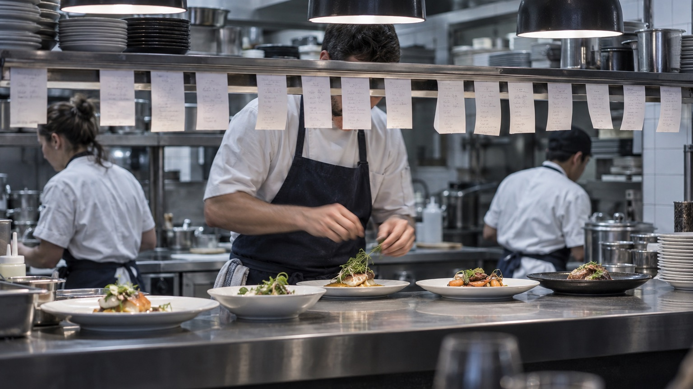

先說結論：我開店第一年以為自己在做餐飲，第二年發現自己在做人事，第三年才知道我真正在管的是一張一張桌子的時間。
這篇文章不談理念，只談帳。下面所有數字都是我自己店裡的實際數字，一間 30 坪、42 個座位的獨立餐酒館，去年全年。
先看去年整年的數字
下面這張表是去年（2025）的全年損益，營業額 1,842 萬，稅後淨利 61 萬，淨利率 3.3%。這個數字比多數人想像的低很多。
| 項目 | 金額（萬元） | 佔營收 |
|---|---|---|
| 食材成本 | 589 | 32.0% |
| 人事成本 | 516 | 28.0% |
| 租金與管理費 | 276 | 15.0% |
| 水電瓦斯 | 92 | 5.0% |
| 耗材與雜支 | 147 | 8.0% |
| 行銷與平台抽成 | 161 | 8.7% |
| 稅後淨利 | 61 | 3.3% |
資料來源：作者自店帳務
食材 32%、人事 28%、租金 15%，這三個數字網路上都查得到，看起來也還算健康。問題是剩下的那 25%：水電、耗材、行銷與平台抽成加起來是 400 萬，比我的租金還多了快一半。
真正吃掉利潤的，是那張你以為不用錢的桌子
桌子是我店裡唯一不在損益表上的成本。它不會每個月寄帳單給我，所以我花了兩年才算到它。
一張四人桌，一個晚上翻兩次和翻三次，全年差距是 47 萬——剛好是我去年的淨利。
算法很笨但很有效：把全年營業額除以桌數、再除以營業天數與時數，我會得到「每張桌子每小時應該產出多少錢」。這個數字一算出來，菜單設計、出餐順序、甚至要不要接訂位，全部都有了判斷依據。

所以我重新做了一次成本拆解，這次把桌子的時間也放進去。結果讓我重新談了租約、砍掉三道菜、也終於看懂為什麼週二和週三永遠在虧。
……真正的問題不在食材，而是我們一直沒算進去的那一項：
……真正的問題不在食材，而是我們一直沒算進去的那一項：那張桌子每個小時要幫我賺多少錢。
我把全年營業額除以桌數再除以營業時數，得到一個數字。然後我發現，週二和週三那兩天，我其實是在付錢請自己上班。
全年逐月的數字拆解
把 1,842 萬拆成十二個月之後，最先跳出來的不是哪個月賺最多，而是落差：生意最好和最差的月份差了將近一倍，可是租金、人事和水電幾乎每個月都一樣。固定成本不會跟著淡季休息，這是我第一次看懂「淨利率 3.3%」有多脆弱。
兩次現金流斷鏈的處理過程
兩次差點關門，都不是發生在虧最多的那個月，而是錢進來的時間和錢出去的時間對不上的時候：信用卡款和外送平台的撥款要晚兩到四週才入帳，房租、薪水和供應商的貨款卻一天都不能晚。
我重新談租約的方法
重新談租約前後花了七個月。我沒有要求降租，而是把這三年的營業額和桌子的產出數字攤給房東看，請他用一部分租金換更長的租期。房東在意的是穩定，我在意的是每個月固定要付的那一筆，兩件事其實可以放在同一張桌子上談。